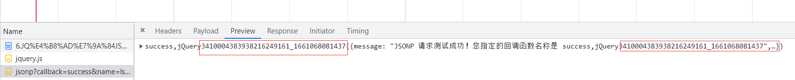

<!DOCTYPE html>
<html lang="en">

<head>
    <meta charset="UTF-8">
    <meta http-equiv="X-UA-Compatible" content="IE=edge">
    <meta name="viewport" content="width=device-width, initial-scale=1.0">
    <title>Document</title>
    <script src="./lib/jquery.js"></script>
</head>

<body>
    <script>
        $(function () {
            //  现在讲的是跨域，ajax不可以跨域，所以要用ajax发送jsonp实现跨域
            //jQuery提供的$.ajax()函数，除了可以发起真正的Ajax数据请求之外，还能够发起JSONP数据请求，例如:
            // method没写 是因为JSONP只能get
            //发起JSONP请求     不属于ajax
            // $.ajax({
            //     url: "http://www.liulongbin.top:3006/api/jsonp?&name=ls&age=30",
            //     //如果要使用$.ajax ()发起JSONP请求，必须指定datatype 为 jsonp
            //     dataType: 'jsonp',//发起这个请求就不会发起ajax请求    他俩无关
            //     success: function (res) {
            //         console.log(res);
            //     }
            // })

            //    // 或者通过这个就不用写 dataType: 'jsonp'了  这个没好使
            //     $.getJSON({
            //         url: "http://www.liulongbin.top:3006/api/jsonp?&name=ls&age=30",
            //         success: function (res) {
            //             console.log(res);
            //         }
            //     })

            // JQ情况下！！！ 
            // 默认情况下，使用jQuery 发起JSONP请求，会自动携带一个callback=jQueryxsx的参数，
            // jQueryxxx是随机生成的一个回调函数名称 返回来的函数名不一定是你自己设置的success
            // 

            // 定义是后端定义好了，跟你有什么关系呢，你要的只是返回来的数据啊，你不是请求成功了吗？？？

        })
    </script>


    <!-- //----自定义函数 和 回调函数名--------------------------------------------------------
    在使用jQuery 发起JSONP请求时，如果想要自定义JSONP的参数以及回调函数名称，可以通过如下两个参数来指定:
    参数：callback 那个
    函数名：jQueryxxx
    但是我们想换 怎么办

-->
    <script>
        $.ajax({
            url: "http://www.liulongbin.top:3006/api/jsonp?&name=ls&age=30",
            dataType: 'jsonp',
            //发送到服务端的参数名称，默认值为callback
            jsonp: 'callback',
            //自定义的回调函数名称,默认值为jQueryxxx格式
            jsonpCallback: 'abc',
            success: function (res) {// jquery直接将回调函数abc放入success中里去了
                console.log(res);
            }
        })
        // jquery直接将回调函数abc放入success中里去了
    </script>

</body>

</html>